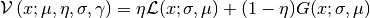

satlas.profiles.PseudoVoigt¶
-
class
satlas.profiles.PseudoVoigt(eta=None, fwhm=None, mu=None, amp=None, **kwargs)[source]¶ A callable normalized PseudoVoigt profile.
Parameters: - fwhm (float) – Full Width At Half Maximum, defaults to 1.
- mu (float) – Location of the center, defaults to 0.
- amp (float) – Amplitude of the profile, defaults to 1.
Returns: Callable instance, evaluates the pseudovoigt profile in the arguments supplied.
Return type: Note
The formula used is taken from the webpage http://en.wikipedia.org/wiki/Voigt_profile#Pseudo-Voigt_Approximation, and the supplied FWHM is appropriately transformed for the Gaussian and Lorentzian lineshapes:

The formula is also adapted to incorporate an asymmetry in the lineshape. This is done by varying the used fwhm with a sigmoid function over the frequency range.
Methods
__init__([eta, fwhm, mu, amp])Attributes
aAsymmetry parameter. ampPeak amplitude. ampIsAreaBoolean controlling the behaviour of amp. fwhmFWHM of the peak. muLocation of the peak. nRatio of Lorentzian aspect.